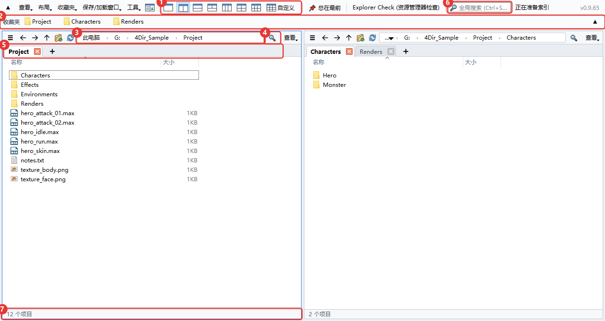
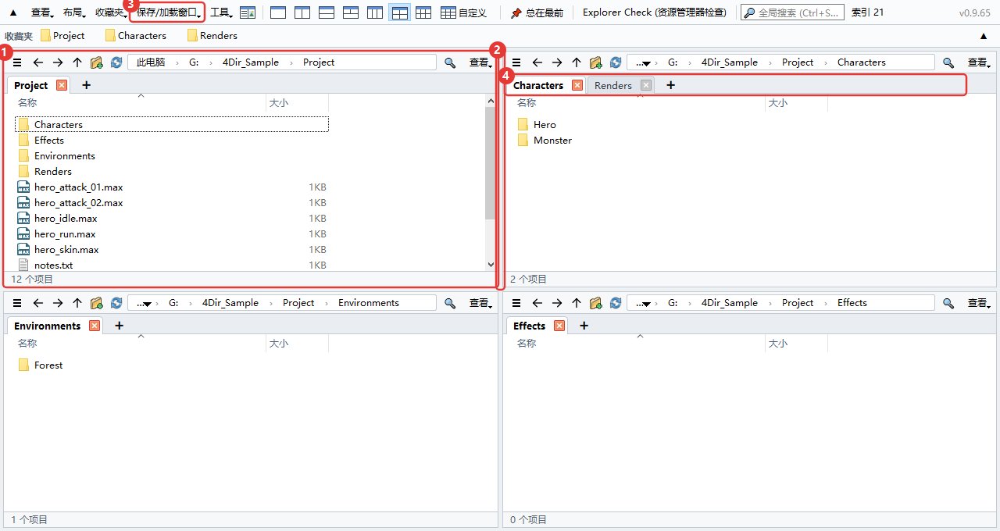
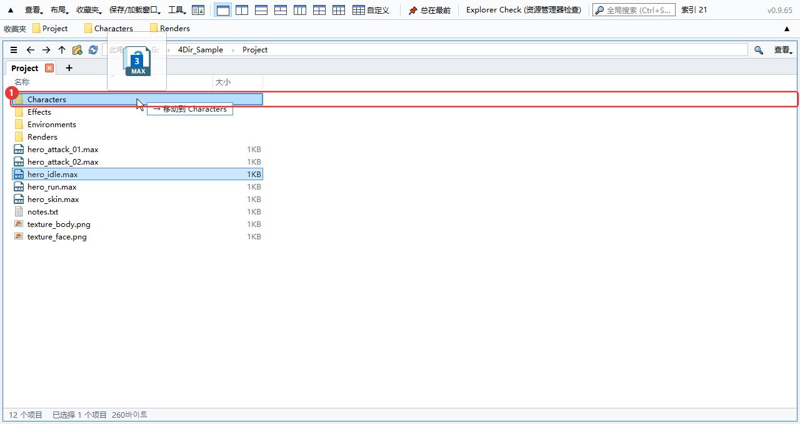
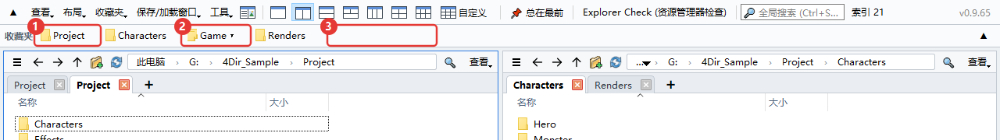
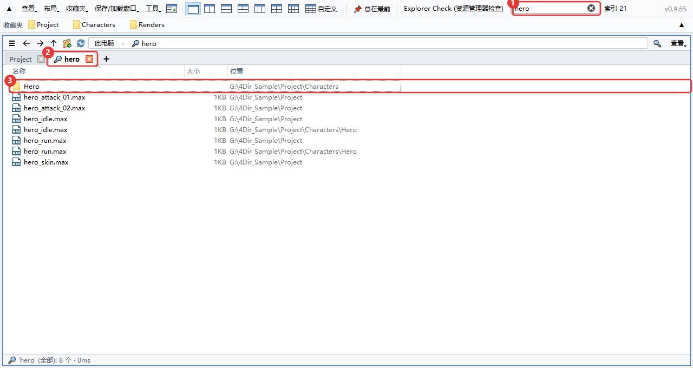
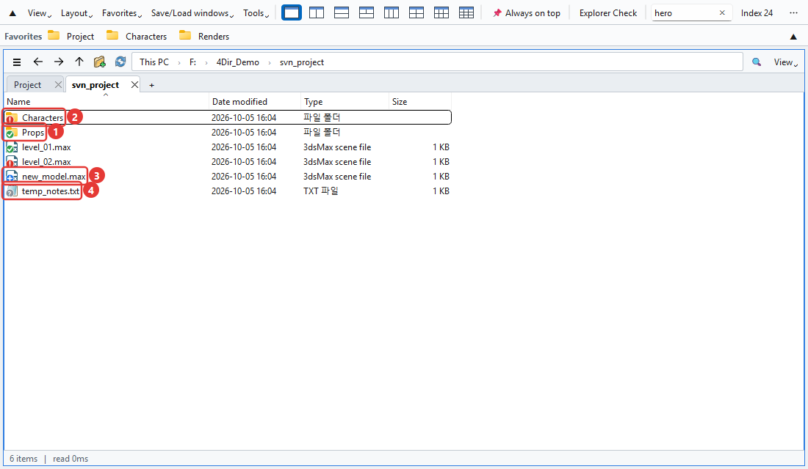
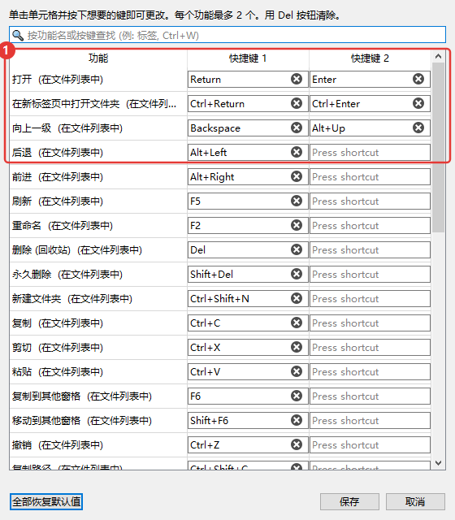
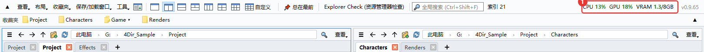
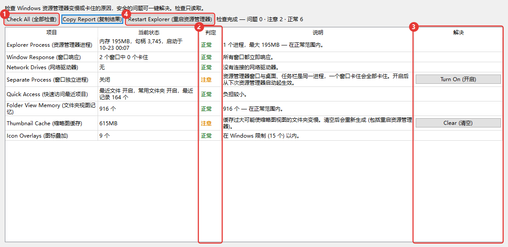

4Dir 使用方法
按照刚开始用时最常碰到的顺序写的。图中的红色编号和文字里的编号对应。快捷键和 Windows 资源管理器基本一样，用过资源管理器的话，有一半内容您其实已经会了。
界面一览
4Dir 可以在一个窗口里并排打开多个文件夹。从上往下看是这样的：

- 分格按钮。1、2、3、4、6 格点一下就行，最后的自定义可以随意设定列数和行数（最多 5×4）。
- 收藏夹栏。把常去的文件夹拖到这里就会多一个按钮。右键按钮可以重命名或删除。
- 地址栏。点路径中的某一段，直接跳到那个文件夹。点右边的空白处，可以改成手动输入。
- 筛选。在当前文件夹里按名称筛选。Ctrl+F
- 标签页。每个窗格有自己的标签页。用 + 或 Ctrl+T 打开，Ctrl+W 关闭。
- 全局搜索。在整个驱动器里按文件名查找，下面的“搜索”一节会细说。
- 状态栏。显示项目数，以及选中的个数和大小。
窗格和标签页
可以把每个窗格看成一个小的资源管理器。每个窗格各自记住自己的标签页和文件夹。

- 最后点过的窗格会有蓝色边框，快捷键作用在这个窗格上。
- 拖动窗格之间的分界线可以调整大小。
- 在保存/加载窗口里，可以给当前的窗格布局和标签页起个名字保存下来。每项工作存一个，用起来很方便。
- 标签页可以拖动来调整顺序，或者移到别的窗格；拖到窗口外面会变成一个新窗口。右键还可以用 Windows 资源管理器打开。
关掉 4Dir 再打开，上次的窗格布局和标签页都会原样回来。开着 4Dir 重启电脑，下次登录时也会自动打开（可以在工具菜单里关掉）。
移动和复制文件
和资源管理器里的用法一样。拖动时，目标文件夹会高亮，旁边还会提前显示“→ 移动到 ○○”这样的提示，告诉您会发生什么。

- 目标文件夹。同一个驱动器是移动，不同驱动器是复制。按住 Ctrl 松手是复制，按住 Shift 是移动。
有多个窗格时不用拖。选中后按 F6 复制到另一窗格，Shift+F6 是移动。
弄错了就按 Ctrl+Z。重命名、新建文件夹、移动、复制、删除到回收站，都可以一步一步撤销。
用 F2 改名时按 ↓，会直接接着改下一个文件。选中多个文件再按 F2，会打开批量重命名窗口。
右键菜单用的就是 Windows 自己的菜单，压缩软件和 TortoiseSVN 的菜单也和在资源管理器里一样会出现。
右键单击 .webp 图片 → WebP 转换 → 另存为 PNG / 另存为 JPG。新文件会出现在同一文件夹中，原文件保留（不需要时请自行删除）。也可以一次选多个文件。
收藏夹
把常去的文件夹做成按钮放在上方那一栏。一开始是空的，只显示您自己加的（和 Windows 资源管理器的快速访问是分开的）。

- 收藏按钮。点一下就在当前窗格打开那个文件夹。右键有在新标签页中打开、重命名、删除。把文件拖到按钮上，会移动或复制到那个文件夹。
- 分组按钮（▾）。把多个收藏归到一个按钮下。点开会展开里面的列表。把文件夹放到分组按钮正中间，就会加进那个分组。
- 把文件夹拖到空白处或按钮之间，那个位置就会多一个新按钮。按钮之间也可以拖动来调整顺序。当前文件夹按 Ctrl+D 就能直接添加。
要整理的东西多，就打开收藏夹 → 整理收藏。一次删除多个、调整顺序和名称、建分组、找出已经不存在的文件夹，都在一个窗口里。要点确认才会生效。
按钮一行放不下时，点栏最右边的 ▼，会展开成多行全部显示（▲ 恢复成一行）。
想直接用 Windows 资源管理器里固定的文件夹，就用收藏夹 → 导入 Windows 资源管理器快速访问。已经有的会跳过。
搜索
在上方的搜索框里输入文字，马上就开始找。第一次启动时会先把驱动器里的文件名列表建好，之后只跟踪变化的部分，所以很快。

- 搜索框。输入多个词时，只显示全部包含的名称，也可以用
*.max这样的星号。Ctrl+Shift+F - 结果会在一个放大镜标签页里打开。
- “位置”列是文件所在的文件夹。双击打开，右键 → 打开文件所在位置就会转到那个文件夹。
搜哪些驱动器，在工具 → 搜索范围里选。网络驱动器默认是关着的。
列表还没建好，或者文件夹不在范围内时，可以用筛选框旁边的箭头按钮，直接搜当前文件夹下面的所有内容。
如果您用 SVN
工作文件夹在 SVN 下的话，文件和文件夹上会带状态标记。装了 TortoiseSVN 的话，用的就是和资源管理器一样的图标。

- 绿色对勾：没有改动。文件夹会看里面的全部内容。
- 红色感叹号：已修改。如果是文件夹，表示里面有还没提交的改动。
- 蓝色加号：待添加（还没提交）。
- 灰色问号：不在版本控制里的文件。
收藏夹栏的按钮上也会有同样的标记，在上方就能看出哪些文件夹还没提交。
很大的工作文件夹第一次检查要几秒钟，这期间状态栏会显示“正在检查 SVN”。不需要标记的话，关掉查看 → 显示 → 显示 SVN 状态就行。
修改快捷键
在工具 → 快捷键设置里给每个功能设定想要的键。一个功能最多可以设两个键。

- 点一下格子，再按想用的键，马上就改好了。和别的键重复时会提示。
常用的几个：Ctrl+T 新标签页，Ctrl+W 关闭标签页，Ctrl+N 新窗口，Ctrl+L 地址栏，Ctrl+Shift+C 复制路径，Alt+Enter 属性。
查看 CPU·GPU 使用率
这个功能是为了在跑 3ds Max 渲染或玩游戏时看看电脑有多忙。数字显示在上方那栏的右边。

- CPU：整台电脑的使用率。GPU：显卡使用率。VRAM：显存已用/总量（GB）。超过 60% 变橙色，超过 85% 变红色。每 1.5 秒刷新一次，鼠标移上去可以看到显卡名称。
GPU 和 VRAM 只在 NVIDIA 显卡上显示。其他显卡只显示 CPU。
不显示系统内存的使用量。需要的话请看任务管理器（Ctrl+Shift+Esc）。
要关掉就点查看 → 显示 CPU·GPU 使用率。窗口最小化时会自动停止刷新。窗口太窄时会收进菜单栏末尾的 » 里。
资源管理器检查 (Explorer Check)
Windows 资源管理器老是卡住或变慢时用的工具。从上方那栏的 Explorer Check (资源管理器检查) 或工具菜单打开。打开后马上开始检查，检查只读取信息，不会改动任何东西。

- Check All (全部检查)：重新检查一遍。会看资源管理器内存、窗口响应、网络驱动器、文件夹窗口独立进程、最近使用的项目、文件夹视图记忆、缩略图缓存、覆盖图标数量、最近强制结束的记录等。
- 判定。正常 / 注意 / 问题 / 参考。旁边一栏写着原因。
- 解决按钮。只在能修复的项目上出现。点了会再问一次要改什么，而且只动当前用户的设置和用户文件夹。
- Restart Explorer (重启资源管理器)：资源管理器卡住时关掉再重新打开。已经打开的资源管理器窗口会被关闭。
用 Copy Report (复制结果) 可以把结果复制成文字。来问问题时一起发过来，能更快找到原因。
其他
- 浅色/深色和语言在查看菜单里。语言要重新启动 4Dir 才会切换。
- 4Dir 表现不对劲时，请点工具 → 保存问题报告日志，把生成的 zip 发到 support@4dir.net。我们会根据日志查找原因。